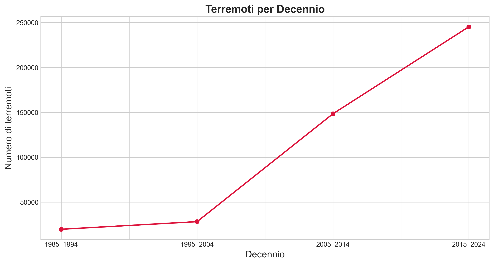
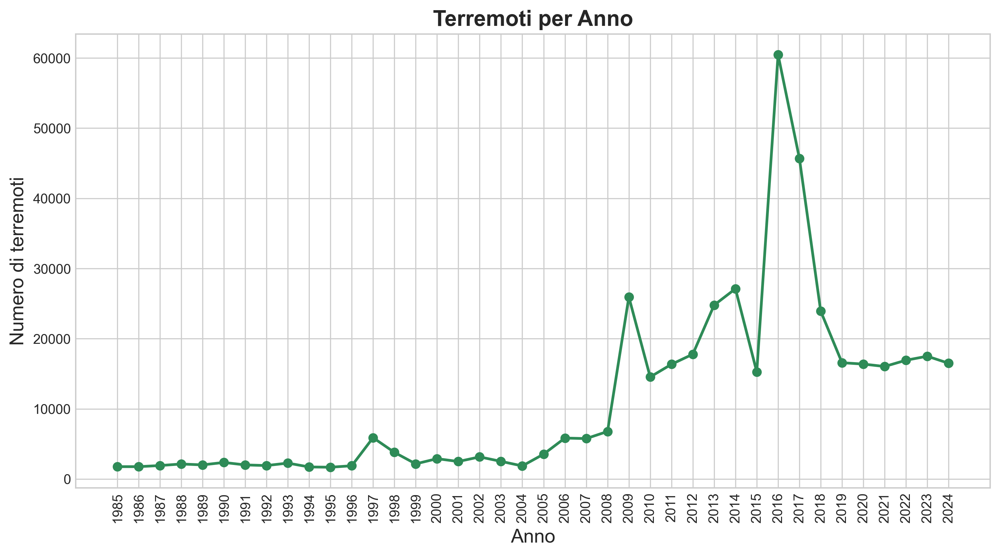
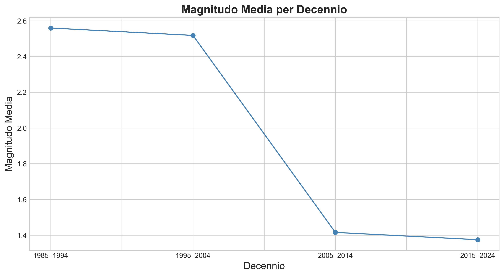
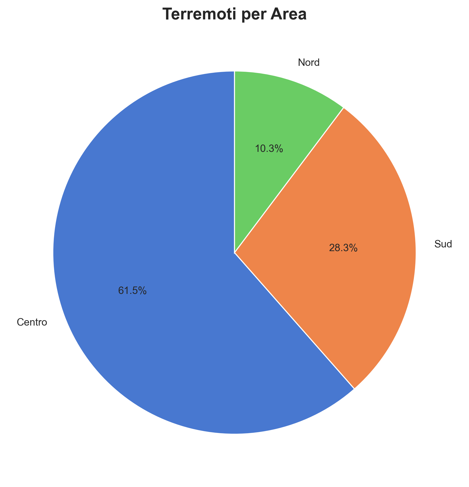
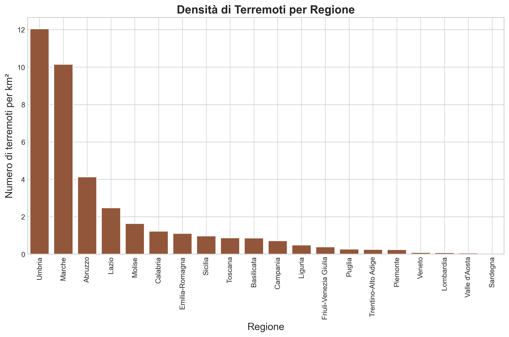
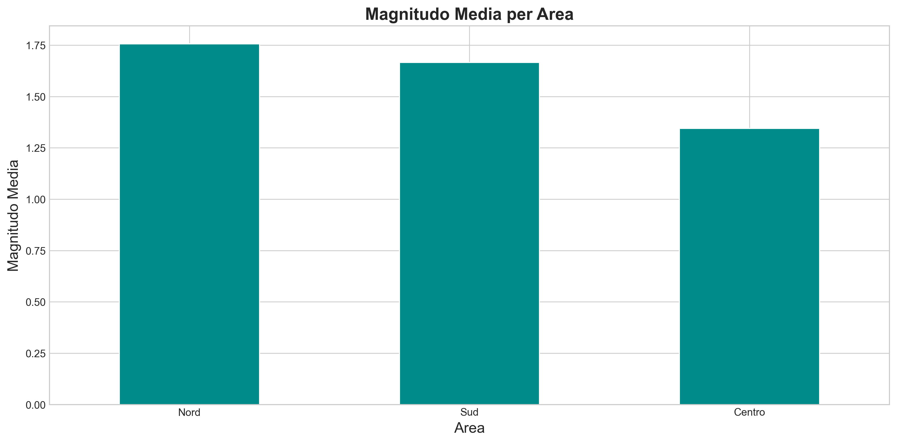
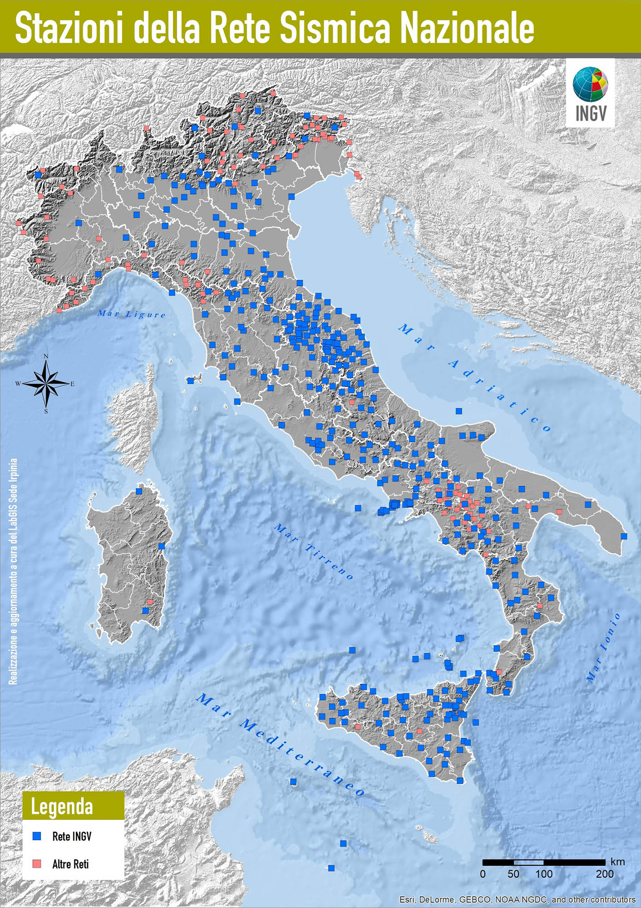
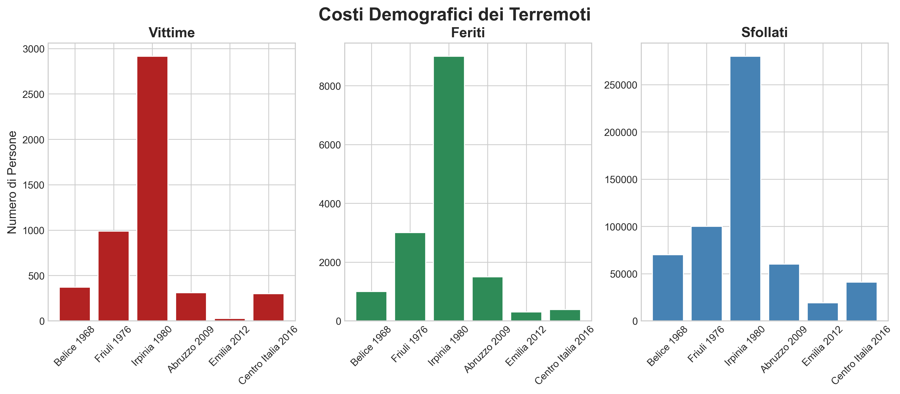
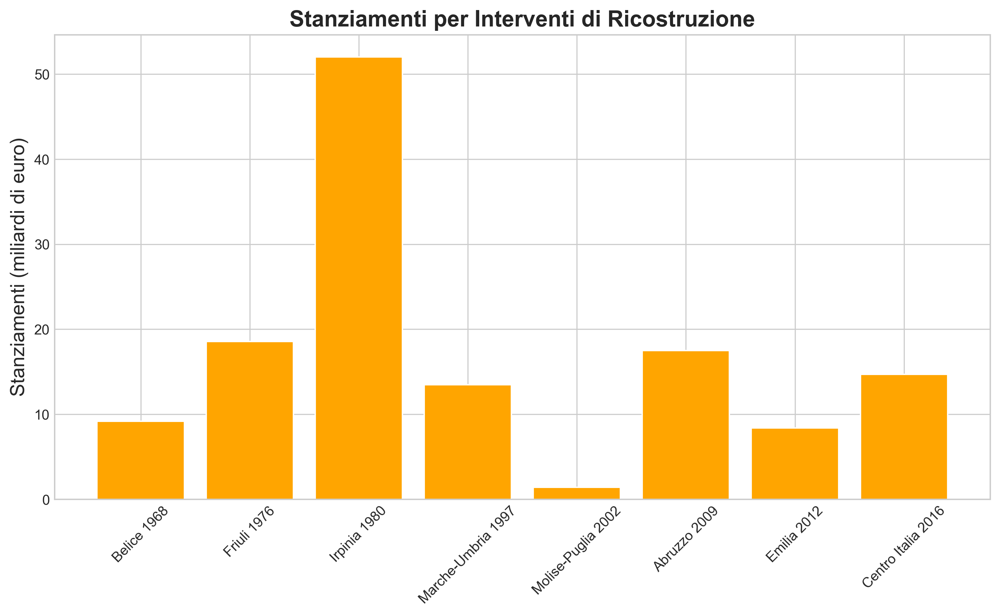
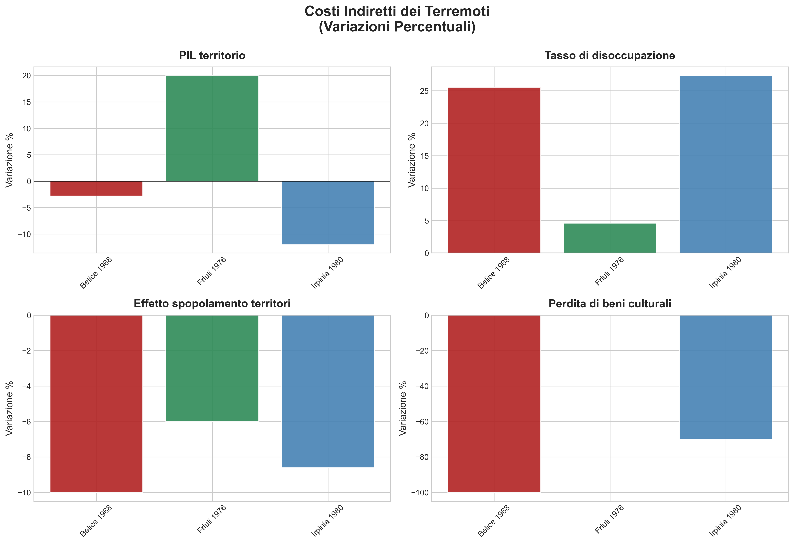

L'Italia è uno dei paesi europei più esposti al rischio sismico. Dal 1985 al 2024 sono stati registrati circa 442.000 terremoti, con un significativo aumento negli ultimi vent'anni dovuto al miglioramento della rete di monitoraggio INGV.
Questo articolo analizza i trend storici e geografici della sismicità italiana, esamina l'impatto demografico ed economico degli otto terremoti più devastanti dal 1968 al 2016 (oltre 4.900 vittime e 135 miliardi di euro di spesa pubblica) e presenta un modello predittivo basato sull'intelligenza artificiale per identificare le aree prioritarie di intervento e orientare le politiche di prevenzione sismica.
Secondo i dati dell’INGV (Istituto Nazionale di Geofisica e Vulcanologia), nel periodo compreso tra il 1° gennaio 1985 e il 31 dicembre 2024, in Italia hanno avuto luogo circa 442.000 terremoti. Di questi, la maggior parte è stata registrata negli ultimi 20 anni, cioè quelli compresi tra il 2005 e il 2024; al contrario, nei primi 20 anni compresi tra il 1985 e il 2004 sono stati registrati molti meno terremoti. Precisamente, nel decennio 1985-1994 sono stati registrati circa 20.000 terremoti, nel decennio 1995-2004 circa 28.000, nel decennio 2005-2014 circa 148.000 e nel decennio 2015-2024 circa 245.000.

Analizzando i dati storici a un livello maggiore di dettaglio, cioè per anno anziché per decennio, risulta evidente un picco di terremoti registrato nel 2016 e proseguito poi nel 2017. Infatti, nel 2016 sono stati registrati più di 60.000 terremoti, tra cui il terremoto con magnitudo 6.5 - la più alta registrata negli ultimi 40 anni - avente come epicentro Norcia (PG), il terremoto con magnitudo 6 avente come epicentro Accumoli (RI) e il terremoto con magnitudo 5.9 avente come epicentro Visso (MC).

Secondo l’intervistato Carlo Meletti, primo tecnologo della sezione di Pisa dell’INGV, è possibile spiegare il picco di terremoti registrato nel 2016 come una replica dei terremoti avvenuti su scala mondiale negli anni precedenti. Infatti, spiega Meletti, negli anni precedenti (in particolare nel 2011) è stato registrato un picco di terremoti a livello globale, il quale si è replicato in Italia nel 2016 e nel 2017.
Esaminando ora i dati storici dal punto di vista della magnitudo, appare evidente che i terremoti registrati tra il 1985 e il 2004 hanno una magnitudo media abbastanza elevata (pari a circa 2.5). Al contrario, i terremoti registrati tra il 2005 e il 2024 hanno una magnitudo media decisamente più bassa (pari a circa 1.4).

Secondo Meletti, ciò è dovuto al fatto che nel periodo 1985-2004 le stazioni sismiche dell’INGV installate sul territorio italiano erano ancora relativamente poche. Di conseguenza, la soglia di detezione – cioè di rilevazione – della magnitudo era piuttosto elevata (all’inizio era intorno a 3.5). Questo spiega non solo l’elevata magnitudo media di questo periodo, ma anche il basso numero di terremoti registrati nei primi 20 anni.
Al contrario, continua Meletti, nel periodo 2005-2024 le stazioni sismiche dell’INGV presenti sul suolo italiano sono sensibilmente aumentate, determinando una soglia di detezione della magnitudo decisamente più bassa (ora è intorno a 1). Ciò spiega non solo la bassa magnitudo media di questo periodo, ma anche l’elevato numero di terremoti registrati negli ultimi 20 anni.
Analizzando i dati a livello geografico, emerge chiaramente che l’area più colpita è il Centro Italia, che ha registrato il 61.5% dei terremoti, pari a circa 260.000 terremoti. Meno colpito ma comunque interessato dal fenomeno sismico è il Sud, che ha registrato il 28.3% dei terremoti, pari a circa 120.000 terremoti. L’area meno interessata dal fenomeno sismico è il Nord, che ha registrato solo il 10.3% dei terremoti, pari a circa 43.000 terremoti.

Queste osservazioni trovano conferma esaminando i dati a un livello maggiore di dettaglio, cioè per regione anziché per area. Infatti, le due regioni più colpite sono proprio del Centro Italia, ovvero l’Umbria e le Marche, che hanno registrato rispettivamente circa 12 terremoti per km² e circa 10 terremoti per km². Meno colpite ma comunque interessate dal fenomeno sismico sono l’Abruzzo e il Lazio, che hanno registrato rispettivamente circa 4 terremoti per km² e poco più di 2 terremoti per km². A seguire le altre regioni, fino ad arrivare a una regione praticamente asismica, ovvero la Sardegna, che in 40 anni ha registrato solo 80 terremoti, pari a 0.003 terremoti per km².

La vera sorpresa arriva però esaminando i dati dal punto di vista della magnitudo. Infatti, il Nord è l’area con la magnitudo media più elevata (pari a circa 1.75). A seguire il Sud, con una magnitudo media pari a circa 1.66, e il Centro, con una magnitudo media pari a circa 1.34.

Secondo Meletti, ciò è dovuto al fatto che nel Centro Italia è presente una rete sismica molto sviluppata. In particolare, vicino alla faglia di Gubbio è installato un osservatorio molto denso di stazioni sismiche. Di conseguenza, in quest’area la soglia di detezione della magnitudo è molto bassa. Questo spiega non solo la bassa magnitudo media del Centro Italia, ma anche l’elevato numero di terremoti registrati in quest’area.
Al contrario, prosegue Meletti, al Sud e soprattutto al Nord sono installate meno stazioni sismiche, il che determina una soglia di detezione della magnitudo più elevata. Ciò spiega non solo la più elevata magnitudo media del Sud e soprattutto del Nord, ma anche il più basso numero di terremoti registrati in queste aree.

La seguente mappa interattiva sintetizza l’aspetto storico e l’aspetto geografico appena analizzati. Infatti, nel menù a tendina in alto a sinistra il lettore può selezionare un anno compreso tra il 1985 e il 2024, in modo da visualizzare sulla mappa tutti i terremoti avvenuti in quell’anno. Inoltre, il lettore può visualizzare i terremoti di tutte le magnitudo oppure solo quelli con una magnitudo bassa (tra 0 e 1.9), medio-bassa (tra 2 e 2.9), media (tra 3 e 3.9), medio-alta (tra 4 e 5.4) o alta (tra 5.5 e 6.5).
Finora abbiamo analizzato i terremoti avvenuti negli ultimi 40 anni da un punto di vista storico e geografico. Non abbiamo però ancora esaminato il loro impatto negativo in termini demografici ed economici. Per fare ciò, è opportuno estendere l’arco temporale considerato finora risalendo dal 1985 al 1968. Infatti, lo studio più recente in materia analizza i costi demografici ed economici degli 8 terremoti di maggiore magnitudo accaduti tra il 1968 e il 2016: il terremoto nella Valle del Belice del 1968, il terremoto nel Friuli Venezia Giulia del 1976, il terremoto in Irpinia del 1980, il terremoto nelle Marche e in Umbria del 1997, il terremoto in Molise e in Puglia del 2002, il terremoto in Abruzzo del 2009, il terremoto in Emilia Romagna del 2012, il terremoto nel Centro Italia del 2016.
Questo studio – realizzato da Fondazione Inarcassa insieme al Consiglio Nazionale degli Ingegneri e al Consiglio Nazionale degli Architetti, Pianificatori, Paesaggisti e Conservatori – è stato presentato nella settima edizione della Giornata Nazionale della Prevenzione Sismica svoltasi a Roma il 17 dicembre 2024.
Come si legge nel documento di sintesi dello studio, gli 8 terremoti presi in considerazione hanno innanzitutto comportato dei costi gravissimi in termini di vite umane, feriti e sfollati. Precisamente, il terremoto nella Valle del Belice provocò 370 vittime e 70.000 sfollati; il terremoto nel Friuli Venezia Giulia provocò 989 vittime e 100.000 sfollati; il terremoto in Irpinia provocò 2.914 vittime e 280.000 sfollati; il terremoto nelle Marche e in Umbria provocò 12 vittime e 32.000 sfollati; il terremoto in Molise e in Puglia provocò 20 vittime; il terremoto in Abruzzo provocò 309 vittime e 60.000 sfollati; il terremoto in Emilia Romagna provocò 27 vittime e 19.000 sfollati; il terremoto nel Centro Italia ha un bilancio di 299 morti e 41.000 sfollati.

Per quanto riguarda invece i costi economici, l’ammontare delle spese sostenute dallo Stato dal 1968 ad oggi per gli interventi di ricostruzione a seguito degli eventi sismici più gravi risulta superiore ai 135 miliardi di euro. Di questi, più di 9 miliardi sono stati spesi per gli interventi di ricostruzione nella Valle del Belice; quasi 19 miliardi sono stati spesi nel Friuli Venezia Giulia; ben 52 miliardi sono stati spesi in Irpinia; più di 13 miliardi sono stati spesi nelle Marche e in Umbria; oltre un miliardo è stato speso in Molise e in Puglia; più di 17 miliardi sono stati spesi in Abruzzo; più di 8 miliardi sono stati spesi in Emilia Romagna; quasi 15 miliardi sono stati spesi nel Centro Italia.

Quindi, dal terremoto nella Valle del Belice lo Stato spende mediamente oltre 2 miliardi l’anno per interventi ricostruttivi. Si tratta di una spesa ingente, ma non sufficiente a garantire il ripristino del tessuto economico e sociale dei territori colpiti dal sisma. I dati pubblici, infatti, evidenziano come le cicatrici di un terremoto permangano a distanza di molti anni: la diminuzione del PIL locale e la riduzione della popolazione residente sono un fattore comune a quasi tutti i territori colpiti dal sisma.
Consideriamo ad esempio il terremoto in Irpinia. Una analisi elaborata dalla Banca d’Italia ha stimato che venti anni dopo il terremoto, il Pil pro-capite nel cratere irpino risultava del 20% più basso rispetto ad una ipotesi controfattuale, cioè ad una ipotesi di quantificazione della crescita se l’evento sismico non si fosse verificato.
Oltre al terremoto in Irpinia, anche il terremoto nella Valle del Belice e il terremoto nel Friuli Venezia Giulia sono utili per valutare gli effetti di mancata crescita economica che generalmente caratterizzano nel lungo periodo le aree colpite dal sisma. Anche a distanza di mezzo secolo, infatti, i parametri dei costi indiretti dei tre terremoti presi in esame sono in negativo, con una sola eccezione relativa al PIL del Friuli dove l’effetto “building back better”, ovvero l’effetto di modernizzazione dell’economia locale a seguito di un evento distruttivo, ha consentito il passaggio da un’economia agricola a un’economia industriale.

A fronte di tutti i costi diretti e indiretti che impattano sulla demografia e sull’economia, l’idea chiave dello studio preso in esame è che occorre andare oltre la mera politica della ricostruzione adottando una lungimirante politica di prevenzione. In particolare, occorre intervenire sul patrimonio edilizio residenziale per realizzare opere di adeguamento sismico.
Infatti, più della metà dei 12 milioni di edifici utilizzati per uso residenziale sono stati costruiti prima del 1971. Meno del 3% è stato costruito nel momento in cui le Norme Tecniche per le Costruzioni hanno iniziato a focalizzarsi sulla prevenzione sismica, ovvero nel 2008. Questo fatto, tuttavia, viene almeno parzialmente mitigato dalle analisi sullo stato di conservazione degli edifici. Il 32% degli edifici risulta in condizioni ottime, il 51% risulta in buone condizioni mentre il restante 17% si trova in un’area di evidente degrado.
Vi sono, insomma, delle aree prioritarie di intervento su cui concentrarsi inizialmente ed altre per le quali sarà possibile intervenire nel medio o lungo periodo.
Nell'individuazione delle aree prioritarie di intervento su cui concentrarsi, occorre naturalmente tenere conto non solo dello stato degli edifici, ma anche delle aree caratterizzate da una sismicità con magnitudo elevata. A tal proposito, è stato sviluppato un modello di intelligenza artificiale che predice la magnitudo di un possibile evento sismico sul territorio italiano. Per fare questa previsione il modello non utilizza strumenti sismologici, ma si basa esclusivamente sui dati storici dei terremoti avvenuti in Italia negli ultimi 40 anni, prendendo in considerazione una serie di fattori geografici e storici:
Per comprendere come funziona il modello, immaginiamo di voler predire la magnitudo di un possibile terremoto in provincia di Firenze, con le seguenti caratteristiche:
Inserendo questi dati nel modello, la magnitudo prevista è pari a circa 1.9. Considerando che il modello compie un errore medio pari a ± 0.3, la magnitudo reale di un terremoto con quelle caratteristiche sarebbe probabilmente pari a circa 2.2 o 1.6.
Il modello ha quindi una buona capacità predittiva, ma – ricordiamolo – non ha la pretesa di indicare quando e dove avverrà un terremoto, ma piuttosto di stimare quale potrebbe essere la magnitudo più probabile di un terremoto in una determinata area, date le condizioni note. Si tratta dunque di uno strumento utile per individuare le aree prioritarie di intervento su cui concentrarsi, cioè quelle dove la magnitudo prevista è più elevata. Un supporto in più, insomma, per orientare le politiche di prevenzione e messa in sicurezza del patrimonio edilizio italiano.
L'analisi dei dati sismici conferma il Centro Italia come l'area più attiva, mentre l'aumento dei terremoti registrati negli ultimi decenni riflette principalmente il miglioramento tecnologico della rete di monitoraggio INGV.
I 135 miliardi di euro spesi per la ricostruzione post-sisma e gli effetti persistenti su economia e popolazione dimostrano l'urgenza di passare dalla gestione dell'emergenza alla prevenzione. Con oltre la metà degli edifici residenziali costruiti prima del 1971, la messa in sicurezza del patrimonio edilizio è prioritaria.
Il modello predittivo sviluppato, pur non prevedendo quando e dove avverranno i terremoti, rappresenta uno strumento utile per identificare le aree di intervento prioritario.
L'Italia del futuro deve necessariamente fondarsi su una cultura della prevenzione sismica per trasformare una vulnerabilità storica in sicurezza per cittadini e territorio.